PHÂN HỆ 01 • /auth/sign-in
Màn hình Đăng Nhập Hệ Thống
Checkbox Shadcn • Demo h-8 • Text-pretty
🔴 GIAO DIỆN CŨ (TRƯỚC KHI TỐI ƯU)
Desktop 1440px
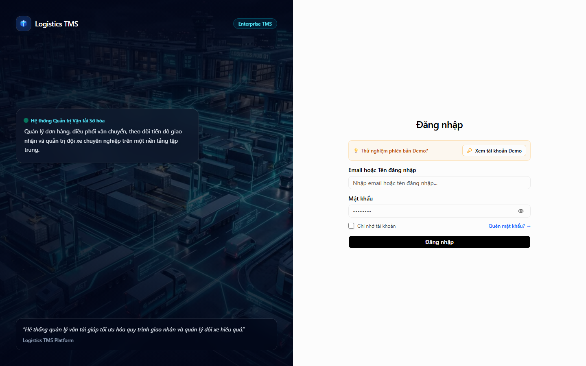
- • Checkbox "Ghi nhớ đăng nhập" dùng thẻ native
<input type="checkbox">vuông nhọn, không ăn khớp thiết kế Radix UI. - • Nút đăng nhập thử nghiệm (Demo) có chiều cao không đồng bộ.
- • Callout có emoji bóng đèn 💡 thừa và rớt từ đơn lẻ dòng cuối.
- • Link "Quên mật khẩu?" chưa có vùng đệm touch target tối thiểu 32px cho mobile.
🟢 GIAO DIỆN MỚI (ĐÃ TỐI ƯU UI/UX)
✓ Đạt chuẩn WCAG
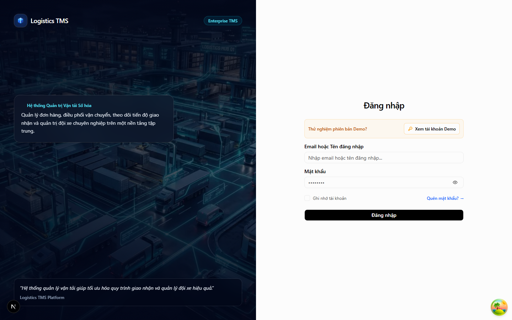
- • Thay bằng Shadcn Checkbox bo góc chuẩn, animation checkmark và focus ring xanh sắc nét.
- • Nút đăng nhập thử nghiệm được chuẩn hóa đồng bộ h-8 (32px).
- • Bỏ emoji thừa, thêm class text-pretty giúp câu văn dàn trải đều, không ngắt quãng vụn vặt.
- • Link "Quên mật khẩu?" có vùng chạm an toàn min-h-[32px] cho thao tác di động.
PHÂN HỆ 02 • /dashboard/overview
Tổng Quan Điều Hành (Overview Dashboard)
TabsList h-8 • Compact Spacing • Tiêu đề sạch
🔴 GIAO DIỆN CŨ (TRƯỚC KHI TỐI ƯU)
Desktop 1440px
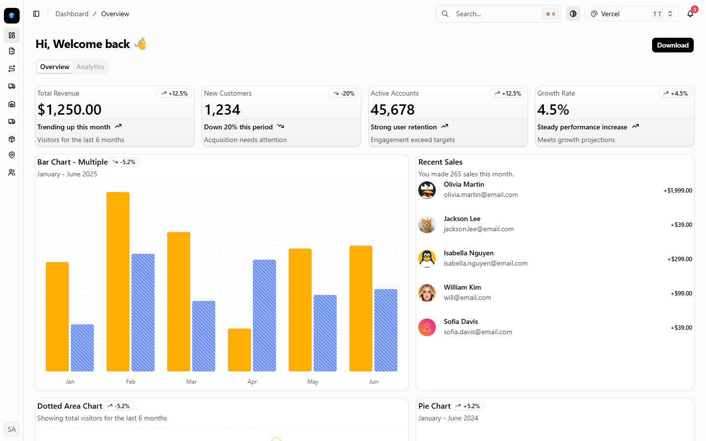
- • Tiêu đề có icon bàn tay vẫy 👋 thiếu tính trang trọng chuyên nghiệp.
- • Khoảng cách các khối card là
space-y-4làm giãn cách màn hình không cần thiết. - • TabsList chưa đồng bộ chiều cao hẹp chuẩn của hệ thống TMS.
🟢 GIAO DIỆN MỚI (ĐÃ TỐI ƯU UI/UX)
✓ Gọn gàng, tinh tế
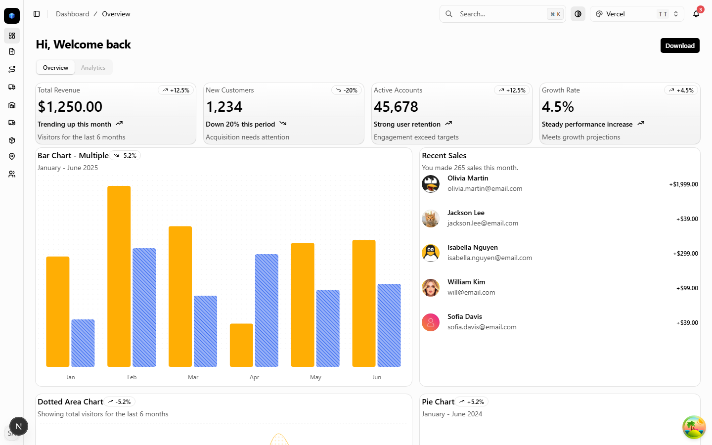
- • Tiêu đề chào sạch sẽ "Hi, Welcome back" trang trọng, đúng chuẩn doanh nghiệp.
- • Thu gọn khoảng cách về space-y-2 và gap-2 giúp nhìn bao quát các chỉ số tài chính/vận đơn hơn.
- • TabsList chuẩn hóa h-8 p-0.5, TabsTrigger h-7 px-3 text-xs sắc nét.
PHÂN HỆ 03 • /dashboard/orders
Quản Lý Đơn Hàng & Hợp Đồng Vận Tải
Date Preset h-8 • Icon Xe Chuẩn • 0 Emoji Thừa
🔴 GIAO DIỆN CŨ (TRƯỚC KHI TỐI ƯU)
Desktop 1440px
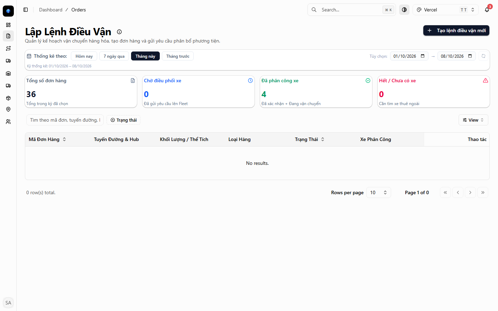
- • Thanh lọc thời gian (Preset bar) có các nút Hôm nay, 7 ngày, 30 ngày bị co bé (cao chỉ 26px), rất khó bấm ngón tay.
- • Cột xe ngoài có emoji xe tải 🚛 chèn lẫn lộn trong badge.
- • Nút làm mới dữ liệu và ô input ngày bị lệch độ cao (26px vs 32px).
🟢 GIAO DIỆN MỚI (ĐÃ TỐI ƯU UI/UX)
✓ Bấm êm tay & đồng bộ
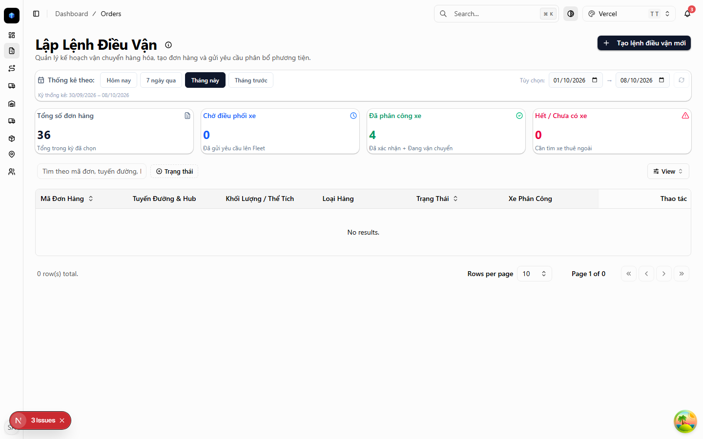
- • Nâng toàn bộ các nút preset ngày và ô chọn ngày lên h-8 (32px), thao tác bấm cực kỳ đầm tay.
- • Badge xe ngoài thay thế emoji bằng vector IconTruck đồng màu mượt mà.
- • Căn chỉnh đồng trục nút làm mới xoay vòng và trường tìm kiếm.
PHÂN HỆ 04 • /dashboard/trips
Phân Công Xe & Điều Phối Chuyến Xe
Header Link Sạch DOM • TabsList h-8 • Vector Xe Ngoài
🔴 GIAO DIỆN CŨ (TRƯỚC KHI TỐI ƯU)
Desktop 1440px
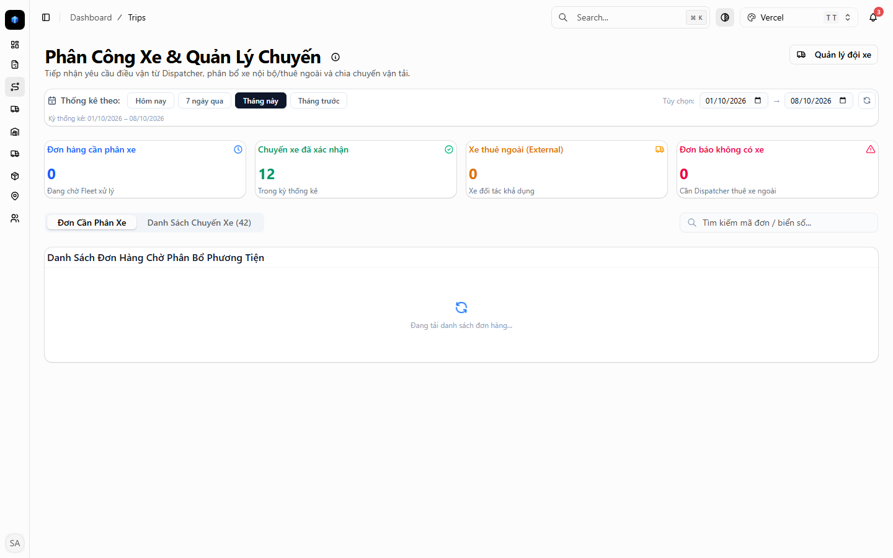
- • Nút "Quản lý đội xe" trên header bị bọc lồng lặp thẻ DOM
<Button><Link>gây cảnh báo trình duyệt. - • TabsList chuyển tab phân xe / chờ điều vận có độ cao không đồng đều.
- • Hộp thoại phân xe và thanh đồng hồ đo tải trọng bị nhồi nhét nhiều emoji 🚛, 💡, ⚖️, 📦.
🟢 GIAO DIỆN MỚI (ĐÃ TỐI ƯU UI/UX)
✓ Chuẩn DOM & Sắc nét
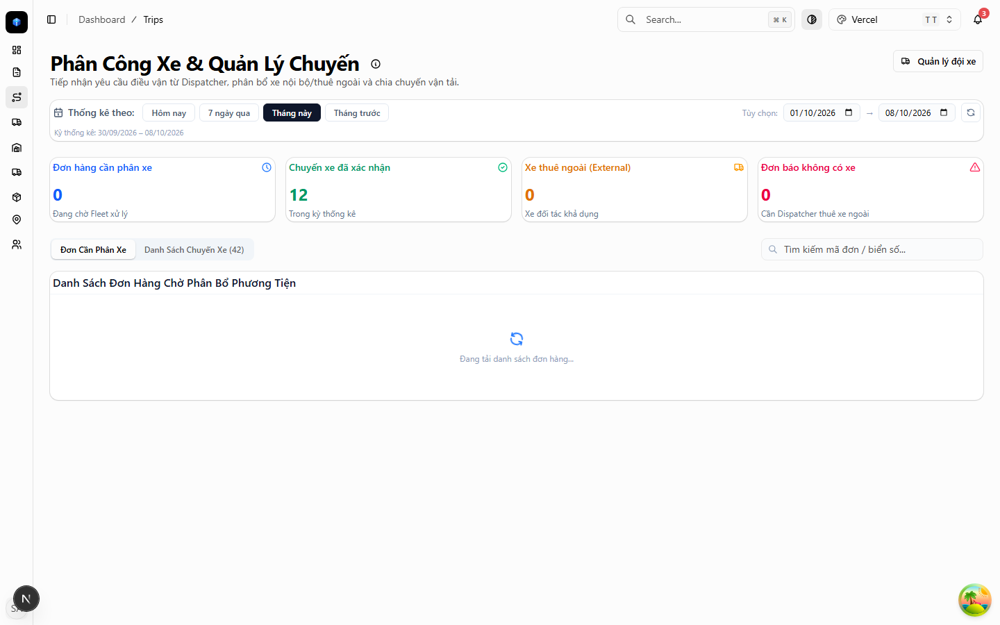
- • Sửa thành thẻ
<Link className={cn(buttonVariants(...))}>hoàn toàn đúng chuẩn Next.js App Router. - • TabsList chuẩn hóa h-8 p-0.5, tab trigger h-7 px-3 text-xs đồng bộ với toàn hệ thống.
- • Loại bỏ triệt để emoji, thay bằng vector icon chuẩn và thẻ thông báo rõ ràng.
PHÂN HỆ 05 • /dashboard/warehouse/inbound
Kho Bãi - Tiếp Nhận & Xe Nhập Kho (Inbound)
Touch Target ≥ 26px • Checkbox Bảng Chuẩn • Modal Compact
🔴 GIAO DIỆN CŨ (TRƯỚC KHI TỐI ƯU)
Desktop 1440px
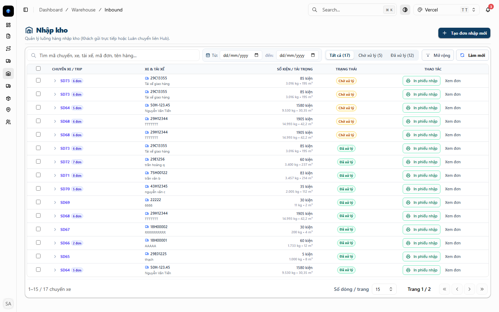
- • Nút chevron mở rộng dòng hàng cao chỉ 16px, thủ kho dùng màn cảm ứng rất khó bấm trúng.
- • Ô checkbox chọn nhiều dòng ở đầu bảng và từng nhóm là thẻ HTML checkbox thô sơ.
- • Mã chuyến xe và mã đơn hàng thu gọn chỉ là text link mỏng, không có padding an toàn.
- • Modal kiểm đếm nhập kho và modal import Excel bị dính padding lớn (p-5, p-6, space-y-5) làm bóp nghẹt bảng dữ liệu.
🟢 GIAO DIỆN MỚI (ĐÃ TỐI ƯU UI/UX)
✓ Vận hành kho tốc độ cao
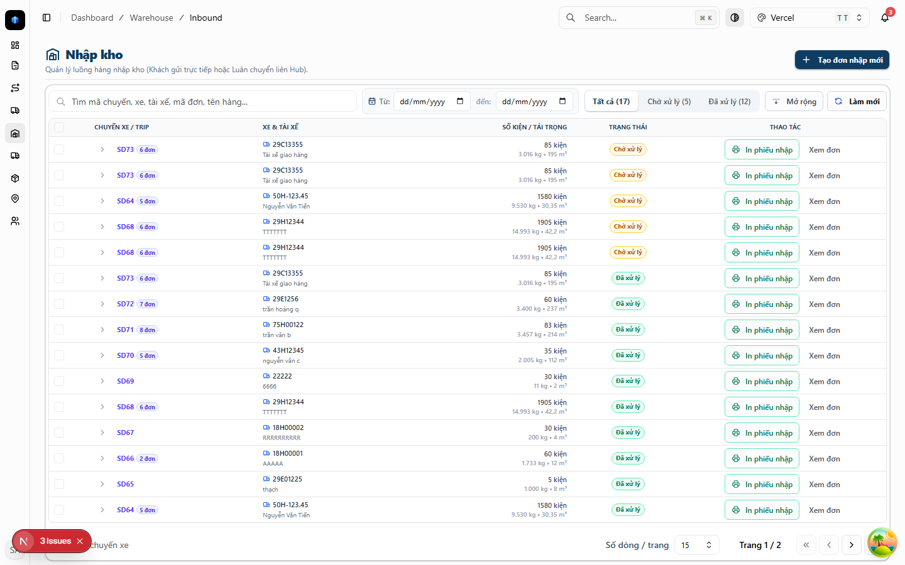
- • Nút chevron mở dòng được mở rộng lên min-h-[26px] min-w-[26px], bấm trúng tức thì.
- • Toàn bộ checkbox bảng chuyển sang Shadcn Checkbox có border xanh nổi bật.
- • Nút mã chuyến và mã đơn có padding min-h-[26px] inline-flex dễ tương tác.
- • Modal kiểm đếm và modal import Excel được thu gọn về p-2.5 space-y-2 max-h-[82vh], hiển thị thêm 50% số dòng hàng trên một khung nhìn.
PHÂN HỆ 06 • /dashboard/warehouse/outbound
Kho Bãi - Xuất Hàng & Xe Xuất Kho (Outbound)
Date Input h-8 • Tabs Trạng Thái h-8 • Bảng Kê Rõ Ràng
🔴 GIAO DIỆN CŨ (TRƯỚC KHI TỐI ƯU)
Desktop 1440px
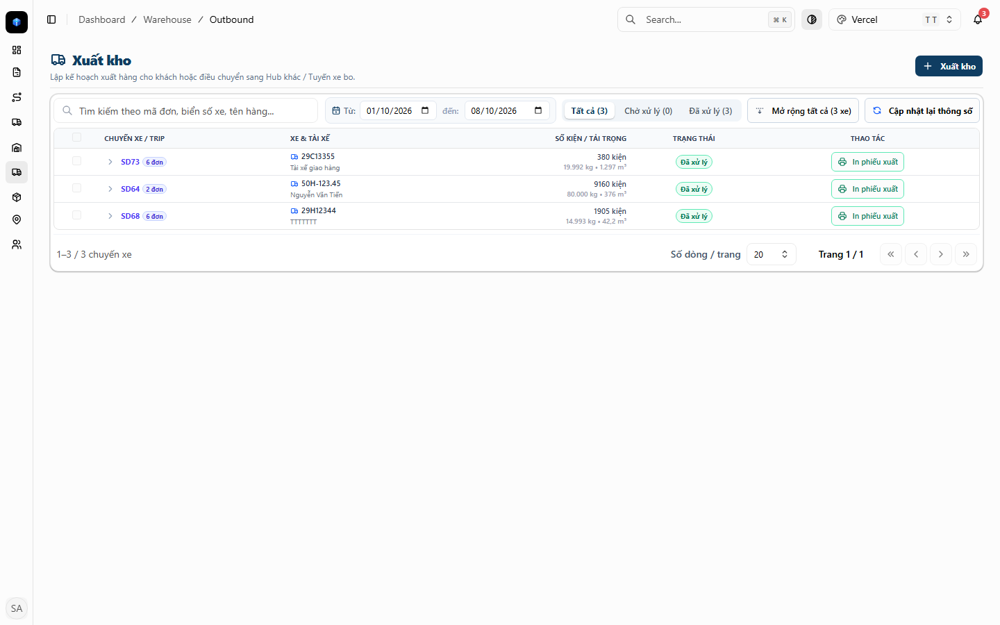
- • Ô chọn ngày lọc xuất kho có chiều cao hẹp (h-7/26px), không đều với nút tìm kiếm.
- • Nút xóa lọc ngày bị thấp, khó chạm ngón tay.
- • Tabs trạng thái xuất kho chưa đạt chiều cao touch target 32px.
🟢 GIAO DIỆN MỚI (ĐÃ TỐI ƯU UI/UX)
✓ Chuẩn hóa hoàn hảo
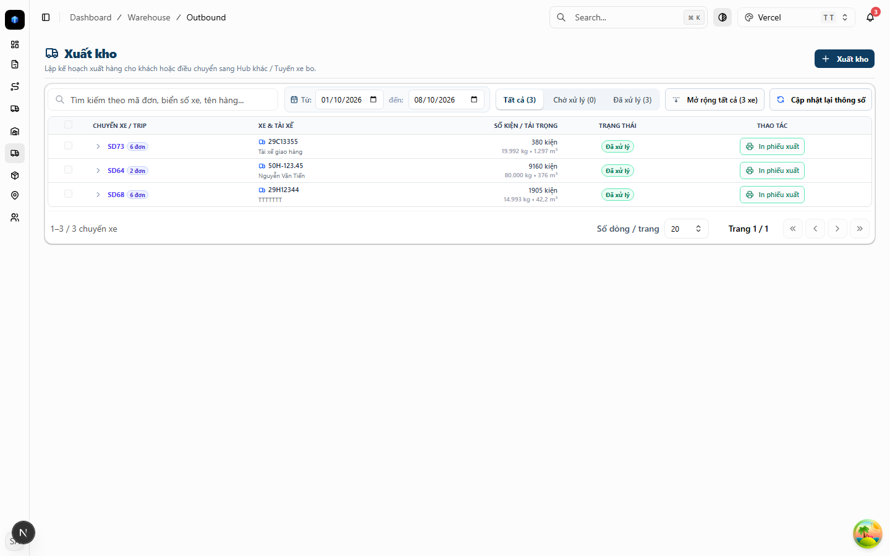
- • Chuẩn hóa tất cả trường date input về h-8 (32px) đồng đều tuyệt đối.
- • Nút xóa lọc nâng lên min-h-[32px], bấm rõ ràng không bị trượt.
- • Tabs trạng thái xuất kho đồng bộ h-8 px-3.
PHÂN HỆ 07 • /dashboard/fleet
Quản Lý Đội Xe & Phương Tiện Vận Tải
Checkbox Xe Ngoài Chuẩn • 0 Emoji Thừa
🔴 GIAO DIỆN CŨ (TRƯỚC KHI TỐI ƯU)
Desktop 1440px
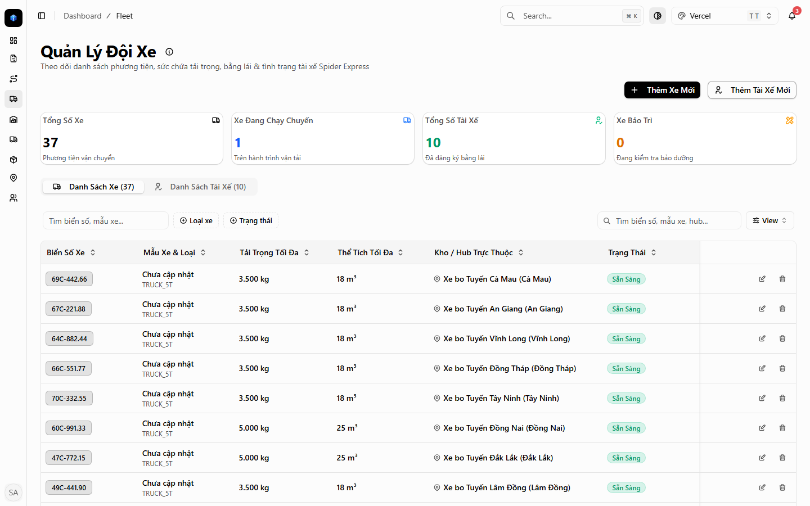
- • Cột Biển số xe có badge "🚛 Xe thuê ngoài" bị thừa emoji.
- • Dialog thêm mới/sửa phương tiện dùng checkbox HTML native cho cờ "Xe thuê ngoài".
🟢 GIAO DIỆN MỚI (ĐÃ TỐI ƯU UI/UX)
✓ Giao diện chuyên nghiệp
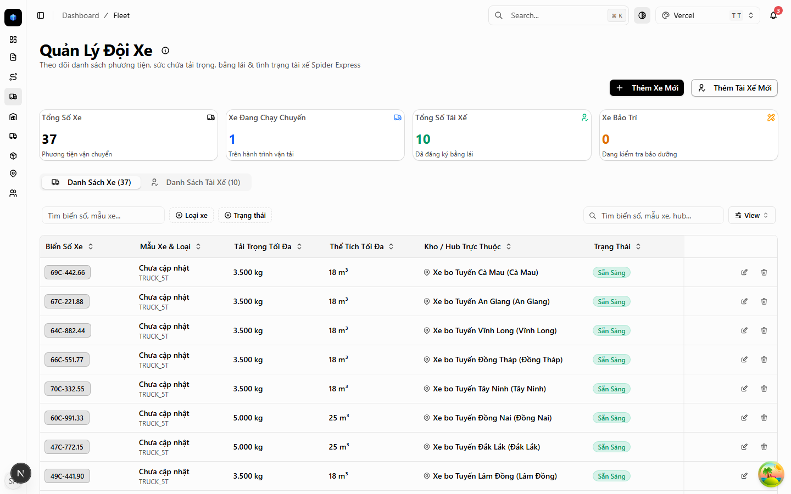
- • Badge xe ngoài hiển thị IconTruck tinh gọn, trang nhã.
- • Dialog quản lý xe áp dụng Shadcn Checkbox với nhãn icon xe đồng bộ.